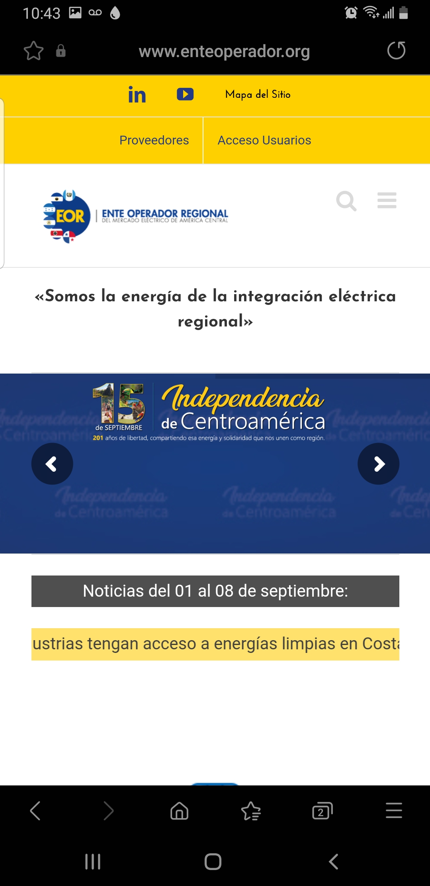
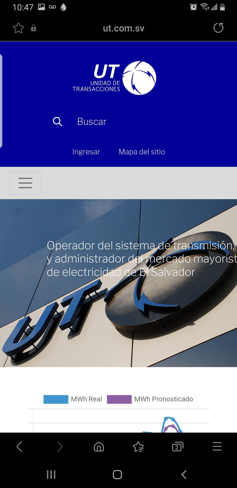
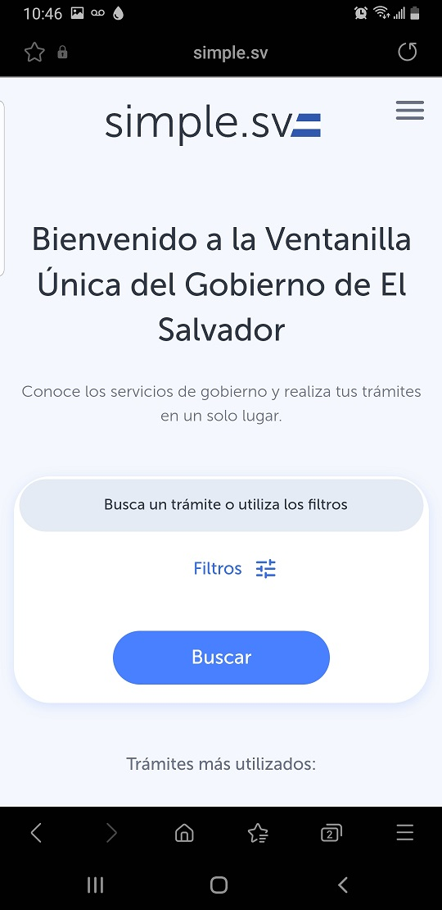

Design Principles Document
Thomas M. Villalobos
PARC: Contrast
Ente Operador Regional
enteoperador.org
In this website the use of PARC: Contrast is clear because it forces the observer to notice important details within the work. Through size, color, or content, contrast draws the viewer in to see the image and lettering.
Rule of Thirds
Unidad de Transacciones
ut.com.sv
The Unidad de Transacciones website is a good example of the Rule of Thirds. It is used to create aesthetics and balance in images. The displayed image is more pleasing to the eye than the centered or more symmetrical approaches.
White Space and Clean Design
Simple
simple.sv
simple.sv is a website of the government of El Salvador. As its name mentions the whole idea of the website is to offer government services in the easiest way possible. The website has empty space around the content and functional elements of a page, which makes the text more readable.